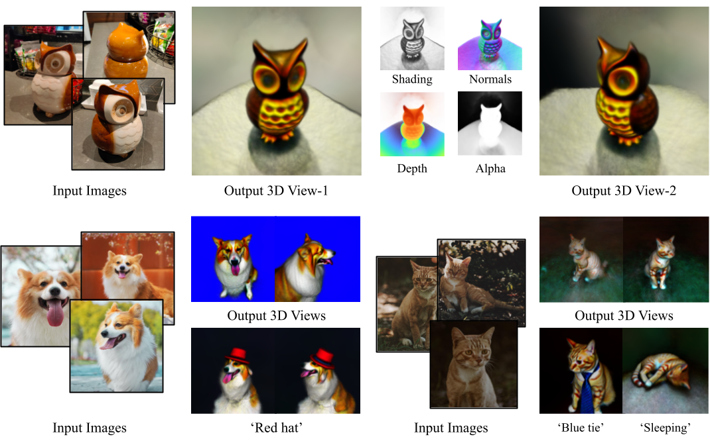
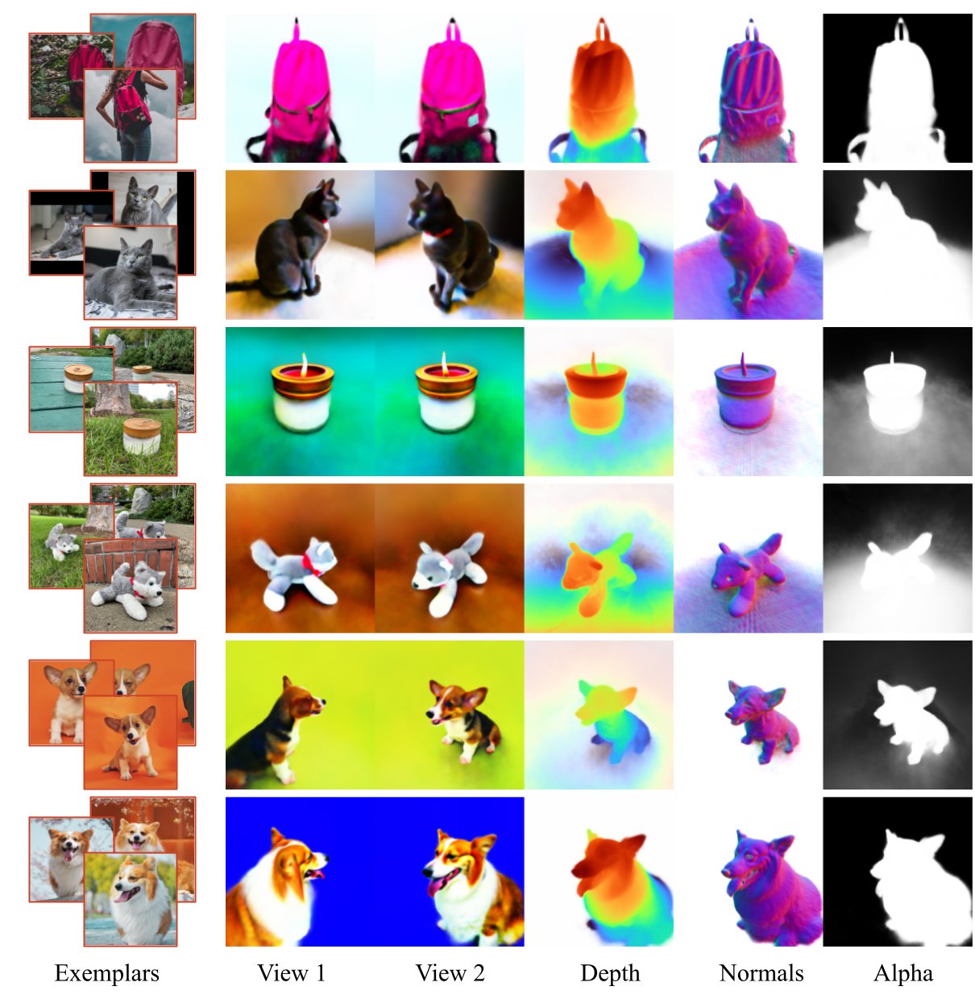

DreamBooth3D: Subject-Driven Text-to-3D Generation

We present DreamBooth3D, an approach to personalize text-to-3D generative models from as few as 3-6 casually captured images of a subject. Our approach combines recent advances in personalizing text-to-image models (DreamBooth) with text-to-3D generation (DreamFusion). We find that naively combining these methods fails to yield satisfactory subject-specific 3D assets due to personalized text-to-image models overfitting to the input viewpoints of the subject. We overcome this through a 3-stage optimization strategy where we jointly leverage the 3D consistency of neural radiance fields together with the personalization capability of text-to-image models. Our method can produce high-quality, subject-specific 3D assets with text-driven modifications such as novel poses, colors and attributes that are not seen in any of the input images of the subject.
Our method takes as input 3-5 casual captures of a subject (e.g., a specific dog) and a text prompt, and returns a volumetric model (NeRF) respecting both the prompt and the subject. We can use text prompts to synthesize the subjects under difference contexts.
In the stage-1 (left), we first partially train a DreamBooth and use the resulting model to optimize the initial NeRF. In stage-2 (middle), we render multi-view images along random viewpoints from the initial NeRF and then translate them into pseudo multi-view subject images using a fully-trained DreamBooth model. In the final stage-3 (right), we further fine-tune the partial DreamBooth using multi-view images and then use the resulting multi-view DreamBooth to optimize the final NeRF 3D asset using the SDS loss along with the multi-view reconstruction loss.
Results for text based 3D asset generation conditioned on casual captures. The assets below are generated using the text prompt "A photograh of < object >". Where < object > is the subject repesented in the exemplar images. The first column presents the exemplar images used to update our T2I model. The second and third column shows two rendered views from the learnt volume. The last three columns shows the depth, normals and alpha maps for the second rendered view.
DreamBooth3D can generate different 3D assets from a simple text prompt and a set of conditinoing images.
A photo of a candle
Photo of a wooden owl
A photo of a sloth plushie
Photo of a wolf plushie
Our framework allows versatile 3D generation with simple modifications in the text prompts. Here, we show some Material editing results. Notice that the glass sculpture and the statue of the dog correspond to the given subject.


Dreambooth 3D can introduce color changes in a consistent manner.
We can even perform non-rigid deformations such as pose changes relatively easily with simple modifications of text prompts. Here we show different dog subject results in various poses. Note that none of the exemplar images contain an image of a jumping or sleeping dog.
DreamBooth3D can even produce plausible 3D models from unrealistic cartoon images.
Our model can add accessories directly onto the 3D subject or into the scene, as in the rainbow carpet and green umbrella.
Conditioning Images
Photo of a dog
..sitting on a rainbow carpet
..sitting on a purple carpet
..wearing a green umbrella
Meshes can be extracted from the learnt volumetric representation using marching cube, which can then be used as a traditional mesh asset in different applications and for 3D printing.
@article{raj2023dreambooth3d,
title={DreamBooth3D: Subject-Driven Text-to-3D Generation},
author={Raj, Amit and Kaza, Srinivas and Poole, Ben and Niemeyer, Michael and Mildenhall,Ben and Ruiz, Nataniel and Zada, Shiran and Aberman, Kfir and Rubenstein, Michael and Barron, Jonathan and Li, Yuanzhen and Jampani, Varun},
booktitle={arXiv preprint },
year={2023}
}